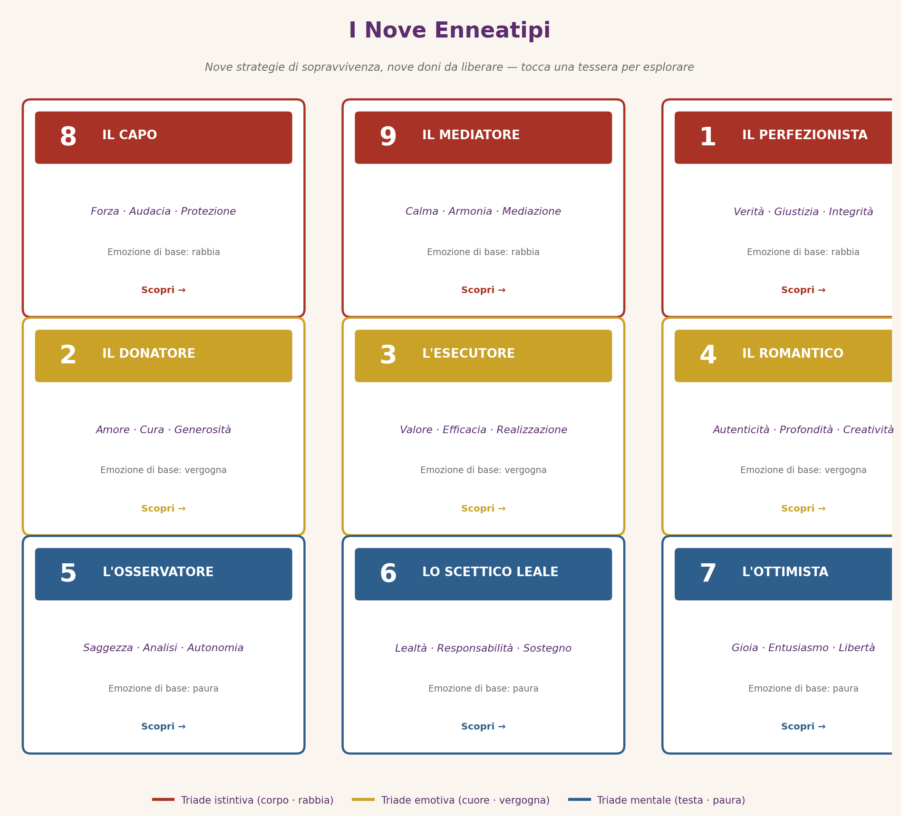

⬤ Tappa del percorso: il «chi sono io» — i nove tipi in dettaglio. (Tappa 3 di 4)
I nove tipi: le nove strategie di sopravvivenza
Nove modi in cui l’essere umano impara a proteggere la propria ferita d’origine — e il dono che ciascuno porta con sé.

Sul cerchio dell’Enneagramma si dispongono nove punti. Le schede seguono l’ordine della circonferenza del simbolo: si parte dalla triade istintiva (8-9-1), si prosegue con quella emotiva (2-3-4) e si conclude con quella mentale (5-6-7). Ogni scheda riporta: motivazione di base, ferita, passione, fissazione, luce, ombra, dono liberato e dinamiche di stress e integrazione.
- Motivazione di base: il desiderio di essere forte e controllare il proprio destino. Cerca di proteggere sé e gli altri dall’ingiustizia.
- Ferita: il mondo percepito come ingiusto e dominante, in cui il debole viene schiacciato.
- Passione: la lussuria — sete di intensità, controllo, impatto diretto.
- Fissazione: la vendetta e la giustizia fatta da sé — difendere e attaccare senza porsi domande.
- Luce (qualità positive): Leadership naturale e carisma; coraggio e determinazione; protezione dei deboli e senso di giustizia; autenticità e direttezza; resilienza e forza interiore.
- Ombra (trappole e difficoltà): Dominazione e controllo eccessivo; collera esplosiva e intimidazione; rifiuto della vulnerabilità; eccesso di forza senza moderazione; difficoltà a delegare e fidarsi.
- Dono liberato: Potenza al servizio del bene, protezione autentica dei più deboli, leadership generosa.
Dinamiche: Sotto stress scivola verso il 5 (ritiro): diventa ritirato, paranoico, ossessivo, cerca di controllare attraverso l’informazione, si isola e diventa sospettoso. Nella crescita sale verso il 2 (apertura e tenerezza): diventa generoso, protettivo con dolcezza, sviluppa empatia, usa il potere per servire gli altri e accetta la vulnerabilità.
- Motivazione di base: il desiderio di pace interiore e armonia esterna. Cerca di evitare conflitti e mantenere l’equilibrio.
- Ferita: l’essere percepito come invisibile, il cui valore conta meno di quello degli altri.
- Passione: l’accidia — addormentamento dell’energia vitale per evitare conflitti.
- Fissazione: l’indolenza e l’autosfumatura — «va bene tutto», perdendosi di vista.
- Luce (qualità positive): Capacità di vedere tutti i punti di vista; calma e stabilità emotiva; accettazione e non giudizio; capacità di mediare e riconciliare; pazienza e tolleranza.
- Ombra (trappole e difficoltà): Indolenza e passività; negazione dei propri bisogni e desideri; procrastinazione cronica; fusione con gli altri (perdita di identità); testardaggine passivo-aggressiva.
- Dono liberato: Presenza serena, capacità di unire, mediare e far sentire ognuno a casa.
Dinamiche: Sotto stress scivola verso il 6 (ansia e dubbio): diventa ansioso, ipervigile, cerca rassicurazione esterna, dipende dall’opinione altrui e si blocca nella paura. Nella crescita sale verso il 3 (azione e definizione di sé): diventa proattivo, si impegna in progetti significativi, sviluppa ambizione sana e agisce con scopo e determinazione.
- Motivazione di base: il desiderio di essere giusto, corretto e migliorare il mondo. Forte senso del dovere e della responsabilità morale.
- Ferita: l’aver percepito di non essere accolto se imperfetto o sbagliato.
- Passione: la rabbia, tenuta sotto controllo e rivolta verso un ideale di correttezza.
- Fissazione: il risentimento e il giudizio — «fare le cose bene» come misura di valore personale.
- Luce (qualità positive): Integrità morale e coerenza etica; attenzione ai dettagli e precisione; capacità di migliorare sistemi e processi; disciplina e autodisciplina; idealismo costruttivo.
- Ombra (trappole e difficoltà): Rigidità e intolleranza verso gli errori; collera repressa che esplode in critiche; perfezionismo paralizzante; sentimento di superiorità morale; difficoltà a rilassarsi e lasciar andare.
- Dono liberato: Equanimità, senso etico autentico, capacità di migliorare il mondo senza condannarlo.
Dinamiche: Sotto stress scivola verso il 4 (rigidità emotiva): diventa depresso, irritabile, invidioso, si sente incompreso e si chiude in malinconia e rancore. Nella crescita sale verso il 7 (leggerezza e spontaneità): diventa più spontaneo, gioioso, accettante dell’imperfezione, capace di divertirsi e vedere il lato positivo.
- Motivazione di base: il desiderio di essere amato e necessario agli altri. Trova valore nel dare e nel prendersi cura delle persone.
- Ferita: il bisogno di amore percepito come condizionato all’essere utile e indispensabile.
- Passione: la superbia — «io so di cosa hai bisogno meglio di te».
- Fissazione: la lusinga e la seduzione come strategia per meritarsi affetto.
- Luce (qualità positive): Empatia profonda e calore umano; generosità disinteressata; capacità di creare connessioni autentiche; intuizione emotiva acuta; altruismo genuino.
- Ombra (trappole e difficoltà): Bisogno di essere necessario che diventa possessività; manipolazione emotiva mascherata da gentilezza; trascurare i propri bisogni; orgoglio nascosto; difficoltà a stabilire confini sani.
- Dono liberato: Altruismo autentico e libero, capacità di dare senza aspettarsi nulla in cambio.
Dinamiche: Sotto stress scivola verso l’8 (aggressività): diventa dominante, controllante, usa la collera per ottenere ciò che vuole e si sente tradito. Nella crescita sale verso il 4 (autenticità emotiva): scopre i propri bisogni autentici, sviluppa creatività, accetta di non essere indispensabile e trova valore in sé stesso.
- Motivazione di base: il desiderio di essere ammirato, riconosciuto e avere successo. Trova valore nell’efficienza e nei risultati.
- Ferita: l’accettazione percepita come legata al successo e all’immagine, non all’essere.
- Passione: la vanità — identità plasmata su ciò che funziona e impressiona.
- Fissazione: la competizione e l’autoinganno emotivo («sto benissimo», anche quando non è vero).
- Luce (qualità positive): Capacità di motivare e ispirare gli altri; efficienza e orientamento ai risultati; adattabilità e carisma; visione strategica; determinazione e resilienza.
- Ombra (trappole e difficoltà): Identità costruita sull’immagine e sul successo; competitività eccessiva; difficoltà a riconoscere i propri sentimenti reali; relazioni superficiali; paura del fallimento.
- Dono liberato: Vera autostima, capacità di ispirare e realizzare al servizio di qualcosa di più grande di sé.
Dinamiche: Sotto stress scivola verso il 9 (apatia): diventa apatico, disimpegnato, confuso, perde la motivazione e si rifugia nell’indifferenza. Nella crescita sale verso il 6 (onestà e impegno): diventa più autentico, leale e collaborativo, si ferma a riflettere e sviluppa relazioni genuine basate sulla fiducia.
- Motivazione di base: il desiderio di trovare se stesso e il proprio significato unico. Cerca autenticità emotiva e profondità.
- Ferita: la sensazione di qualcosa di essenziale che manca, di non essere «completo» come gli altri.
- Passione: l’invidia — il confronto continuo con ciò che gli altri hanno e a sé manca.
- Fissazione: la malinconia e l’idealizzazione di ciò che è lontano, introvabile, perduto.
- Luce (qualità positive): Creatività e sensibilità artistica; profondità emotiva e autenticità; capacità di trasformare il dolore in bellezza; introspezione e consapevolezza di sé; empatia per le sfumature emotive.
- Ombra (trappole e difficoltà): Malinconia cronica e auto-commiserazione; sentimento di essere «diversi» e incompresi; invidia verso gli altri; drammatizzazione emotiva; difficoltà a vivere nel presente e accettare la quotidianità.
- Dono liberato: Creatività e profondità autentica, capacità di dare voce al dolore e trasformarlo in bellezza.
Dinamiche: Sotto stress scivola verso il 2 (bisogno di approvazione): diventa bisognoso di attenzione, manipolativo emotivamente, si aggrappa agli altri per sentirsi amato e validato. Nella crescita sale verso l’1 (equilibrio e oggettività): trasforma la creatività in azione costruttiva, sviluppa disciplina, trova bellezza nel quotidiano e accetta la realtà.
- Motivazione di base: il desiderio di essere competente e capire il mondo. Trova sicurezza nella conoscenza e nell’autonomia.
- Ferita: il mondo percepito come invasivo e pretenzioso, che esige troppo e restituisce poco.
- Passione: l’avarizia — conservazione gelosa di energia, tempo, conoscenza.
- Fissazione: l’attaccamento all’osservazione distaccata, la riduzione della vita al pensiero.
- Luce (qualità positive): Intelligenza analitica e curiosità intellettuale; indipendenza e autonomia; capacità di vedere pattern nascosti; obiettività e lucidità; concentrazione profonda.
- Ombra (trappole e difficoltà): Isolamento e ritiro dal mondo; avarizia emotiva e difficoltà a condividere; arroganza intellettuale; paralisi da analisi eccessiva; difficoltà a esprimere emozioni.
- Dono liberato: Saggezza profonda, capacità di vedere con chiarezza e di generare conoscenza vera.
Dinamiche: Sotto stress scivola verso il 7 (dispersione): diventa dispersivo, iperattivo, cerca distrazioni compulsive ed evita i problemi con attività superficiali. Nella crescita sale verso l’8 (azione e coraggio): diventa assertivo, agisce con fiducia, condivide la conoscenza, assume leadership e partecipa attivamente alla vita.
- Motivazione di base: il desiderio di sicurezza e supporto. Cerca strutture affidabili e relazioni di fiducia.
- Ferita: l’incertezza sull’affidabilità del mondo e delle persone care.
- Passione: la paura — dubbio, ricerca di conferme, scansioni continue di minacce.
- Fissazione: la previsione e la controprova — «e se andasse storto?» come domanda ossessiva.
- Luce (qualità positive): Lealtà e affidabilità; previsione dei problemi e pianificazione; coraggio quando agisce per gli altri; senso di comunità e appartenenza; onestà e umiltà.
- Ombra (trappole e difficoltà): Ansia cronica; dipendenza dall’autorità o ribellione eccessiva; sospettosità e diffidenza; indecisione paralizzante; proiezione delle proprie paure sugli altri.
- Dono liberato: Lealtà profonda, coraggio sereno, capacità di sostenere gli altri nei momenti difficili.
Dinamiche: Sotto stress scivola verso il 3 (competizione): diventa competitivo, ossessionato dall’immagine e cerca successo per compensare l’insicurezza. Nella crescita sale verso il 9 (calma e fiducia): diventa sereno, accetta l’incertezza, trova pace interiore e diventa un mediatore naturale.
- Motivazione di base: il desiderio di essere soddisfatto e felice. Cerca esperienze piacevoli ed evita il dolore e la limitazione.
- Ferita: la frustrazione e la sofferenza percepite come intollerabili, da cui fuggire.
- Passione: l’ingordigia — sete di esperienze, opzioni, stimoli sempre nuovi.
- Fissazione: la pianificazione e l’idealizzazione — il «prossimo momento meraviglioso» che deve arrivare.
- Luce (qualità positive): Ottimismo contagioso e gioia di vivere; creatività e visione delle possibilità; adattabilità e spirito d’avventura; capacità di risolvere problemi con entusiasmo; energia e slancio propositivo.
- Ombra (trappole e difficoltà): Evitamento del dolore e della sofferenza; impulsività e mancanza di impegno; superficialità e difficoltà a completare progetti; ricerca compulsiva di stimoli; difficoltà a gestire la frustrazione.
- Dono liberato: Gioia genuina, gratitudine, capacità di vedere possibilità dove altri vedono muri.
Dinamiche: Sotto stress scivola verso l’1 (perfezionismo rigido): diventa rigido, critico, ossessionato dalle regole, intollerante verso sé e gli altri. Nella crescita sale verso il 5 (profondità e focalizzazione): diventa più riflessivo e concentrato, approfondisce le esperienze e trova gioia nella semplicità.